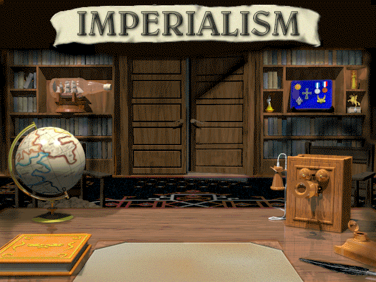
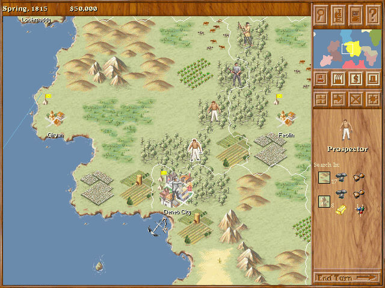

名稱：帝國主義1 (Imperialism，英文版) 簡介：Frog City 1997年出品的回合制策略遊戲，由SSI代理發行 [待補]。

保護：光碟，破解碼（放入光碟才有動畫與背景音樂）： Imperialism.exe 75 74 83 CF EB -- -- -- 75 75 83 CF EB -- -- -- 75 6C 83 CF EB -- -- -- 75 7D 8B 0D EB -- -- -- 備註：XP以上系統安裝時，要將Setup.exe設成Win9x相容。